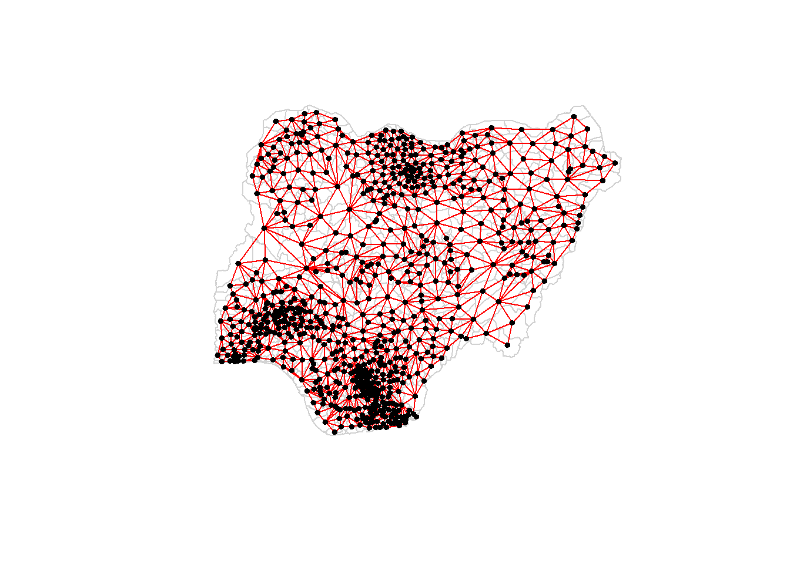

pacman::p_load(tidyverse, sf, spdep, tmap, funModeling)Assignment 1
Birds of a feather flock together: Do functionally similar water points co-occur in Nigeria?
Water is an important resource to mankind. Yet over 40% of the global population does not have access to sufficient clean water. Developing countries especially are most affected by water shortages and poor water quality.
The purpose of this project is to apply appropriate global and local measures of spatial association techniques to reveal the spatial patterns of Non Functional water points in Nigeria.
More background on the study and the data sources can be found here.
Getting Started
Install and load the required packages.
Importing Data
There are two geospatial datsets that will be used, they are:
geo_export: water point geospatial data in rural areas from Water Point Data Exchange (WPdx)nga_admbnda_adm2_osgof_20190417: nigeria Level-2 admin boundary polygon GIS data
Importing Water Point Geospatial Data
We will read in the geo_export data and extract out only the rows relating to Nigeria, which is the country of interest for our study.
wp <- st_read(dsn = "data",
layer = "geo_export",
crs = 4326) %>%
filter(clean_coun == "Nigeria")Next, we save the extracted sf data table (i.e., wp) into an output file in rds data format. For subsequent analysis, we can just load this extracted file.
write_rds(wp, "data/wp_nga.rds")Importing Nigeria LGA Boundary Data
Next, we will import the LGA boundary data.
nga <- st_read(dsn = "data",
layer = "nga_admbnda_adm2_osgof_20190417",
crs = 4326)Data Preparation
Recoding NA values into strings
In the code chunk below, replace_na() is used to recode all NA values in status_cle field into Unknown.
wp_nga <- read_rds("data/wp_nga.rds") %>%
mutate(status_cle = replace_na(status_cle, "Unknown"))Extracting Water Point Data
We want to examine the different classes of status_cle in our water point data. To get a quick view of the distribution, we use freq() from funModeling package.
freq(data = wp_nga, input = "status_cle")Then, we will extract the water point data into three different dataframes based on functional, non-functional and unknown class.
wp_functional <- wp_nga %>%
filter(status_cle %in% c("Functional",
"Functional but needs repair",
"Functional but not in use"))
wp_nonfunctional <- wp_nga %>%
filter(status_cle %in% c("Non-Functional",
"Non-Functional due to dry season",
"Abandoned/Decommissioned",
"Abandoned",
"Non functional due to dry season"))
wp_unknown <- wp_nga %>%
filter(status_cle == "Unknown")Performing Point-in-Polygon Count
We want to find out how many water points from each class are there in each admin boundary in Nigeria. Using st_intersects(), it will return a list of the indexes of water points found in each admin boundary, then we use lengths() to obtain the number of water points and add the value to the newly created columns.
(Note that st_intersects(points, polygon) will return TRUE/FALSE on each of the points, whereas st_intersects(polygon_points) will return the indexes of the points that fall inside each polygon. We should also not confuse with st_intersection(x, y), which is another function that returns the a geometry object that has the same class as the first argument (x), e.g., it can be used to return a polygon geometry of the intersection between two polygons.)
nga_wp <- nga %>%
mutate(total_wp = lengths(st_intersects(nga, wp_nga))) %>%
mutate(total_wp_functional = lengths(st_intersects(nga, wp_functional))) %>%
mutate(total_wp_nonfunctional = lengths(st_intersects(nga, wp_nonfunctional))) %>%
mutate(total_wp_unknown = lengths(st_intersects(nga, wp_unknown)))Saving the Analytical Data Table
We further wrangle the data table to derive two fields namely pct_functional and pct_nonfunctional. To keep the file size small, we select relevant fields from the data table and save them separately. For subsequently analysis, we will only need to use this extracted dataset (i.e., nga_wp.rds and can remove all other raw datasets.
nga_wp <- nga_wp %>%
mutate(pct_functional = total_wp_functional/total_wp) %>%
mutate(pct_nonfunctional = total_wp_nonfunctional/total_wp) %>%
select(ADM2_EN, ADM2_PCODE, ADM1_PCODE, ADM0_EN, total_wp, total_wp_functional,
total_wp_nonfunctional, total_wp_unknown, pct_functional,
pct_nonfunctional)
write_rds(nga_wp, "data/nga_wp.rds")Visualising the spatial distribution of water points
nga_wp <- read_rds("data/nga_wp.rds") %>%
rename("wp_func" = "total_wp_functional",
"wp_nonfunc" = "total_wp_nonfunctional",
"wp_unknown" = "total_wp_unknown")tm_shape(nga_wp) +
tm_polygons(col = c("total_wp", "wp_func", "wp_nonfunc", "wp_unknown")) +
tm_layout(legend.position = c("right", "bottom"),
main.title = "Spatial Distribution of Water Points in Nigeria",
main.title.position = "center",
main.title.size = 1,
asp = 2)
Creating Spatial Neighbours
Creating spatial weights is a necessary step in using areal data, to check whether this is spatial patterning. The first step is to define which relationships between observations are to be assigned as neighbours (i.e., the neighbour criterion to be used).
There are two general methods for defining spatial neighbours:
- Contiguity Method (aka Adjacency Method) - Effective when polygons are similar in size and distribution, and when spatial relationships are a function of polygon proximity (the idea that if two polygons share a boundary, spatial interaction between them increases). Variations include using Queen’s or Rook’s case.
- Distance-Based Method - Effective for point data, or when there is large variation in polygon size. Variations include using Fixed Distance or Adaptive Distance.
Note that in the spdep package, neighbour relationships between n observations are presented by an object class nb. It is a list of length n with the index numbers of neighbours of each component recorded as an integer vector. If any observations has no neighbours, the component contains an integer zero.
Creating Spatial Neighbours using Contiguity Method (Queen)
We will first explore the use of contiguity method for defining of neighbours. For this study, we will use the Queen’s case for defining the shared boundaries (refer figure below).
We will use the function poly2nb() of spdep package to build the neighbours list nb object based on Queen contiguity method.
nb_queen <- poly2nb(nga_wp, queen=TRUE)
summary(nb_queen)Neighbour list object:
Number of regions: 774
Number of nonzero links: 4440
Percentage nonzero weights: 0.7411414
Average number of links: 5.736434
1 region with no links:
86
Link number distribution:
0 1 2 3 4 5 6 7 8 9 10 11 12 14
1 2 14 57 125 182 140 122 72 41 12 4 1 1
2 least connected regions:
138 560 with 1 link
1 most connected region:
508 with 14 linksThe summary report above shows that there are 774 areal units in Nigeria. Using the Queen contiguity method, the areal units have a range of neighbours between 0 and 14, with an average of 5.7 neighbours and most areal units having between 4 and 7 neighbours. Notably, one areal unit [86] has no links (likely an isolated region that does not share boundary with the other regions). This might be an issue for subsequent analysis.
We can find out more about this areal unit [86] based on its index using the code chunk below. From the results, we know that this region is named Bakassi. It is however not visible on the map.
# Extract region without neighbour
reg_without_neighbour <- nga_wp[86,]
print(reg_without_neighbour$ADM2_EN)[1] "Bakassi"# Plot the region in map
qtm(nga_wp) + qtm(reg_without_neighbour, fill = "red")Similarly, we can examine the areal unit [508] with the most neighbours. This region is named Mokwa and while it is not the biggest area geographically, its long shape likely contributed to it sharing boundaries with many other regions.
# Extract region with max neighbours (14)
reg_max_neighbour <- nga_wp[508,]
print(reg_max_neighbour$ADM2_EN)[1] "Mokwa"# Plot the region in map
qtm(nga_wp) + qtm(reg_max_neighbour, fill = "green")
Creating Spatial Neighbours using Distance-Based Method
Next we will explore the use of distance-based methods for defining of neighbours. The first step of computing distance-based neighbours is to calculate the centroid coordinates of each aerial unit polygon. It is useful for us to transform the original data from geographic coordinate system to projected coordinate system. This is because geographic coordinate system is not appropriate if the analysis need to use distance or/and area measurements.
Thereafter, there are two different approaches of the distance-based method:
- Fixed Distance - Some areas like the rural areas might be more sparse than the urban areas, resulting in them having more neighbours based on the fixed distance method, leading to potential large estimate variances. We will need to ensure that all features should have at least one neighbour.
- Adaptive Distance - Chooses the k nearest points as neighbour and hence ensures that each areal unit has a minimum number of neighbours for analysis. Effective when the values associated with our features are skewed (hence each features should be evaluated with a minimum number of neighbours) or when the distribution of our data varies across the study area such that some regions are further away from others.
Transformation to Projected Coordinate System
First, we check the coordinate reference system of our data. The crs is currently in EPSG: 4326.
st_crs(nga_wp)Coordinate Reference System:
User input: EPSG:4326
wkt:
GEOGCRS["WGS 84",
DATUM["World Geodetic System 1984",
ELLIPSOID["WGS 84",6378137,298.257223563,
LENGTHUNIT["metre",1]]],
PRIMEM["Greenwich",0,
ANGLEUNIT["degree",0.0174532925199433]],
CS[ellipsoidal,2],
AXIS["geodetic latitude (Lat)",north,
ORDER[1],
ANGLEUNIT["degree",0.0174532925199433]],
AXIS["geodetic longitude (Lon)",east,
ORDER[2],
ANGLEUNIT["degree",0.0174532925199433]],
USAGE[
SCOPE["Horizontal component of 3D system."],
AREA["World."],
BBOX[-90,-180,90,180]],
ID["EPSG",4326]]We will convert to Projected Coordinate Systems of Nigeria for the subsequent steps in our distance-based method. There are three Projected Coordinate Systems of Nigeria, they are: EPSG: 26391, 26392, and 26303. For this study, we will use EPSG: 26391.
nga_wp_projected <- st_transform(nga_wp, crs=26391)
st_crs(nga_wp_projected)Coordinate Reference System:
User input: EPSG:26391
wkt:
PROJCRS["Minna / Nigeria West Belt",
BASEGEOGCRS["Minna",
DATUM["Minna",
ELLIPSOID["Clarke 1880 (RGS)",6378249.145,293.465,
LENGTHUNIT["metre",1]]],
PRIMEM["Greenwich",0,
ANGLEUNIT["degree",0.0174532925199433]],
ID["EPSG",4263]],
CONVERSION["Nigeria West Belt",
METHOD["Transverse Mercator",
ID["EPSG",9807]],
PARAMETER["Latitude of natural origin",4,
ANGLEUNIT["degree",0.0174532925199433],
ID["EPSG",8801]],
PARAMETER["Longitude of natural origin",4.5,
ANGLEUNIT["degree",0.0174532925199433],
ID["EPSG",8802]],
PARAMETER["Scale factor at natural origin",0.99975,
SCALEUNIT["unity",1],
ID["EPSG",8805]],
PARAMETER["False easting",230738.26,
LENGTHUNIT["metre",1],
ID["EPSG",8806]],
PARAMETER["False northing",0,
LENGTHUNIT["metre",1],
ID["EPSG",8807]]],
CS[Cartesian,2],
AXIS["(E)",east,
ORDER[1],
LENGTHUNIT["metre",1]],
AXIS["(N)",north,
ORDER[2],
LENGTHUNIT["metre",1]],
USAGE[
SCOPE["Engineering survey, topographic mapping."],
AREA["Nigeria - onshore west of 6°30'E, onshore and offshore shelf."],
BBOX[3.57,2.69,13.9,6.5]],
ID["EPSG",26391]]Computing Centroids of Each Aerial Unit Polygon
To compute the centroid of each areal unit polygon, we use map_dbl() from purrr package and st_centroid() from sf package.
longitude <- map_dbl(nga_wp_projected$geometry, ~st_centroid(.x)[[1]])
latitude <- map_dbl(nga_wp_projected$geometry, ~st_centroid(.x)[[2]])
coords <- cbind(longitude, latitude)
head(coords) longitude latitude
[1,] 549364.0 123694.9
[2,] 547123.4 120376.5
[3,] 1189496.9 1059770.9
[4,] 489057.4 534262.6
[5,] 593718.2 113824.1
[6,] 642618.7 251222.3Creating Spatial Neighbours using Fixed Distance Method
With the centroids computed, we can now create spatial neighbours using the distance-based method. First, we will explore the fixed distance method.
The following functions will be used:
knearneigh() of spdep which returns a matrix with the indices of points belonging to the set of the k nearest neighbours of each other
knn2nb() which converts the knn object returned by knearneigh() into a neighbours list of class nb with a list of integer vectors containing neighbour region number ids
nbdists() of spdep to calculate a list of vectors of distances corresponding to the neighbour object. The function returns in the units of the coordinates if the coordinates are projected, in km otherwise
unlist() for removal of the list structure of the returned object.
dnearneigh() of spdep package to find an neighbours based on an interpoint distance
To ensure that each region is linked to at least one neighbour, we will calculate a list of vectors of distances corresponding to the first neighbour object (i.e., k=1). Then using the maximum value value in the list of distances as our upper threshold gives certainty that all units will have at least one neighbour (as compared to setting an arbitrary distance value as upper threshold).
The summary report below shows that the largest first nearest neighbour distance is 72139m, so we will use this as our upper threshold distance.
nb_dist_k1 <- knn2nb(knearneigh(coords, k=1))
k1dists <- unlist(nbdists(nb_dist_k1, coords))
summary(k1dists) Min. 1st Qu. Median Mean 3rd Qu. Max.
2669 12834 20304 22084 27783 72139 The following code chunk computes the fixed distance neighbours.
nb_dist_fixed <- dnearneigh(coords, 0, 72139)
summary(nb_dist_fixed)Neighbour list object:
Number of regions: 774
Number of nonzero links: 18130
Percentage nonzero weights: 3.026327
Average number of links: 23.42377
Link number distribution:
1 2 3 4 5 6 7 8 9 10 11 12 13 14 15 16 17 18 19 20 21 22 23 24 25 26
5 9 11 22 32 35 33 34 29 35 27 18 21 23 16 12 12 11 16 17 16 10 14 10 5 13
27 28 29 30 31 32 33 34 35 36 37 38 39 40 41 42 43 44 45 46 47 48 49 50 51 52
12 5 15 13 12 7 10 8 12 5 12 17 14 9 10 4 5 3 7 6 11 8 5 5 4 2
53 54 55 56 57 58 59 60 61 62 63 64 65 67 68 70
3 3 6 3 5 6 2 5 5 8 6 6 4 3 1 1
5 least connected regions:
90 112 123 237 670 with 1 link
1 most connected region:
585 with 70 linksThe summary report above shows that there are 774 areal units in Nigeria. Using the fixed distance method, the areal units have a range of neighbours between 1 and 70. This is a big variation of the number of neighbours.
Creating Spatial Neighbours using Adaptive Distance Method
Based on the contiguity method used in the previous section, the areal units have an average of 5.7 neighbours, with the majority between the range of 4 and 7 neighbours. Using this as a reference, we will use k=6 for our adaptive distance method, i.e., choosing the 6 nearest points as neighbours. Using the adaptive distance method, all regions will have 6 neighbours.
nb_dist_k6 <- knn2nb(knearneigh(coords, k=6))
nb_dist_k6Neighbour list object:
Number of regions: 774
Number of nonzero links: 4644
Percentage nonzero weights: 0.7751938
Average number of links: 6
Non-symmetric neighbours listVisualising Neighbours
We can do a visualisation of the neighbours based on Queen contiguity method, fixed distance method and adaptive distance method. However, as the regions are too numerous, the visualisations have limited utility in this study.
Neighbours from Queen Contiguity Method
plot(nga_wp_projected$geometry, border="lightgrey")
plot(nb_queen, coords, pch = 19, cex = 0.6, add = TRUE, col= "red")
Neighbours from Fixed Distance Method
plot(nga_wp_projected$geometry, border="lightgrey")
plot(nb_dist_fixed, coords, add=TRUE)
plot(nb_dist_k1, coords, add=TRUE, col="red", length=0.08)Neighbours from Adaptive Distance Method
plot(nga_wp_projected$geometry, border="lightgrey")
plot(nb_dist_k6, coords, pch = 19, cex = 0.6, add = TRUE, col = "red")Determining the Spatial Neighbours to use
To recap, we have explored three ways to build the spatial neighbours, specifically the Queen contiguity method, fixed distance method and adaptive distance method.
The Queen contiguity method resulted in one region (Bakassi) having no links at all and is hence not suitable for this geographical study.
The fixed distance method resulted in regions having a very large range of the number of neighbours (between 1 and 70). This is indicative that the regions could have a large variation in sizes (hence distance from centroid) and large variation in density. This might not be a suitable method for this geographical study.
We will choose the adaptive distance method (with k=6) for the purpose of this study as it is the most reasonable based on the geographical distribution of this study. All regions will have 6 neighbours for our evaulation and analysis.
Subsequent steps:
- Spatial Neighbours
Define which are neighbours (choosing the neighbour criterion)
Continuity Spatial Weights Method
QUEEN method using poly2nb(sf, queen=TRUE)
ROOK method using poly2nb(sf, queen=FALSE)
Distance-based Method
- Compute the centroid coordinates of the areas using:
longitude <- map_dbl(sf$geometry, ~st_centroid(.x)[[1]])
latitude <- map_dbl(sf$geometry, ~st_centroid(.x)[[2]])
coords <- cbind(longitude, latitude)
- Fixed distance weight matrix using dnearneigh(coords, lower, upper, longlat=TRUE). The fixed distance weight matrix defines all areas with centroids within defined lower-upper distance threshold as areas. To get the upper threshold, we first do k1 <- knn2nb(knearneigh(coords)) to convert the knn neighbours into a nb class object, then take nbdists(k1, coords) to find the distances. We can take the max distance here as a reference for the upper threshold so as to confirm all unit will have a least one neighbour
- Adaptive distance weight matrix enforces a fixed number of neighbours e.g., using knn2nb(knearneigh(coords, k=6))
- Compute the centroid coordinates of the areas using:
Assign weights to the identified neighbour links (spatial weights)
Row-standardised weight matrix based on queen’s method using nb2listw(nb_object, style=“W”, zero.policy=TRUE)
Weight matrix based on inverse distance method using computation of inverse distance (dist <- nbdists(wm_q, coords, longlat = TRUE) then ids <- lapply(dist, function(x) 1/(x))). After that take rswm_ids <- nb2listw(wm_q, glist=ids, style=“B”, zero.policy=TRUE)
Raw weight matrix using b_weights <- lapply(wm_q1, function(x) 0*x + 1) then b_weights2 <- nb2listw(wm_q1, glist = b_weights, style = “B”)
Application of Spatial Weight Matrix (using lag.listw())
Spatial Lag with row-standarised weights taking row-standardised weight matrix based on queen’s method as spatial weight
Spatial Lag as a sum of neighbouring values taking raw weight matrix as spatial weight
Spatial window average (first include.self() then take repeat steps to compute row-standardised weight matrix based on queen’s method and take that as spatial weight)
Spatial window sum (first include.self() then take repeat steps to compute raw weight matrix and take that as spatial weight)
- Check Global Spatial Autocorrelation, i.e. whether spatial distribution is random or are neighbours similar to each other
Moran’s I - using the decided spatial weights computed in the previous section, do a moran test (moran.test(sf$variable, listw=spatial_weight,))
Monte Carlo Moran’s I - moran.mc()
Geary’s C using the decided spatial weights computed in the previous section, do a geary test (geary.test(sf$variable, listw=spatial_weight,))
Monte Carlo Geary’s C - geary.mc()
- Do a Spatial Correlogram to examine patterns of global spatial autocorrelation as we increase the distance (lag) using sp.correlogram()
- Do Cluster and Outlier Analysis using Local Indicators of Spatial Association
Compute local moran using localmoran()
To view the general pattern: we can map the local moran’s I values and p-values on the map
For a quick view of the relationship between the values of the choen attribute at each location and the average value of the same attribute at neighbouring locations, we can do a quick Moran scatterplot using moran.plot()
For a more detailed analysis and mapping, we can assign the locations to four quardrants and plot a LISA Cluster Map. The LISA Cluster Map shows the significant locations colour-coded by their belonging in the quardrant.
Preparing LISA map classes then plotting LISA map
Plotting LISA Map
- Hot Spot and Cold Spot Area Analysis (besides detecting clusters and outliers, localised spatial statistics can be also used to detect hot spot and/or cold spot areas. It tells us where features with either high (i.e., hot spots) or low values (cold spots) cluster spatially).
Getis and Ord’s G Statistics
Note difference:
Moran’s I is a measure of the degree to which the value at a target site is similar to values at adjacent sites. Moran’s I is large and positive when the value for a given target (or for all locations in the global case) is similar to adjacent values and negative when the value at a target is dissimilar to adjacent values.
Getis-Ord G* identifies areas where high or low values cluster in space. G* is high where the sum of values within a neighborhood of a given radius or configuration is high relative to the global average and negative where the sum of values within a neighborhood are small relative to the global average and approaches 0 at intermediate values.
For G statistics, we need to use distance-based matrix (either fixed distance or adaptive distance). Then we compute the G1 statistics using localG()